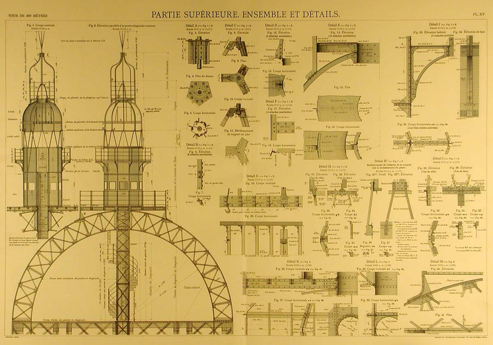
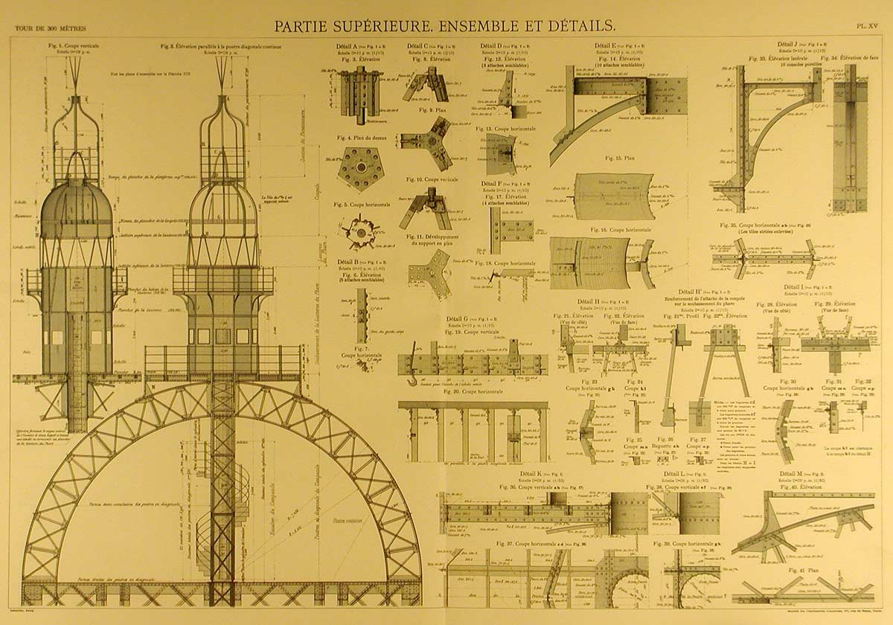

El montaje de las patas comienza el 1 julio 1887 para terminar veintiún meses más tarde.
Todos los elementos se prepararon en la fábrica de Levallois-Perret cerca de París, sede de la empresa Eiffel. Cada una de las 18.000 piezas de la torre fue diseñada y calculada antes de ser trazada al milímetro y ensamblada por elementos de unos cinco metros. Sobre el terreno, entre 150 y 300 obreros, dirigidos por un equipo de veteranos en grandes viaductos metálicos, se encargaron del montaje de este gigantesco mecano.
Todas las piezas metálicas de la Torre Eiffel están unidas con remaches, modo de construcción propio de la época en que se levantó la torre.
Provisionalmente las uniones se fijaron en su lugar con ayuda de bulones, remplazados posteriormente por remaches colocados en caliente. Cuando se enfrían, se contraen asegurando así la fijación de las piezas unas contra otras. Se necesita un equipo de cuatro hombres para colocar un remache: uno para aplicar calor, uno para sujetarlo en su sitio, uno para dar forma a la cabeza y el último para golpearlo con un mazo. Sólo una tercera parte de los 2.500.000 remaches utilizados en la torre se colocaron directamente sobre el terreno.

Equipa de remachadores
Las patas reposan sobre cimientos de hormigón instalados unos metros bajo el nivel del suelo sobre una cama de grava compacta.
Cada arista metálica reposa sobre su propia pilastra, unida a las demás mediante muros, sobre la cual ejerce una presión de 3 a 4 kilos por centímetro cuadrado. En el lado del Sena, se utilizaron artesones metálicos estancos y aire comprimido inyectado lo cual permitía a los obreros trabajar bajo el nivel del agua.
La torre se montó con ayuda de andamios de madera y pequeñas grúas a vapor fijadas a la misma torre.
El montaje de la primera planta se realizó con la ayuda de doce andamios provisionales de madera y de 30 metros de altura, y cuatro andamios más grandes de 45 metros.
Es una velocidad récord, si se tienen en cuenta los medios rudimentarios de la época. El montaje de la torre es una maravilla de precisión, como reconocieron todos los cronistas de la época. Con fecha de inicio en enero 1887, la obra terminó el día 31 marzo 1889. Gustave Eiffel fue condecorado con la Legión de Honor en la estrecha plataforma de la cima.
El periodista Émile Goudeau visitó la obra a principios de 1889 y describió así el espectáculo.

Los obreros de la torre Eiffel
"Una nube espesa de alquitrán y de hulla se nos metía en la garganta, mientras un ensordecedor ruido de metal rugía bajo el martillo. Todavía trabajaban en los bulones: unos obreros, encaramados a un saliente de unos pocos centímetros, se turnaban para golpear los bulones (en realidad eran remaches) con sus mazas de hierro. Uno podría haberlos tomado por herreros tranquilamente ocupados en golpear con ritmo sobre un yunque, en alguna forja de pueblo, salvo porque estos herreros no golpeaban de arriba abajo, verticalmente, sino de forma horizontal y como con cada golpe se desprendían chispas, estos hombres negros, agrandados por e

.jpg)
 
